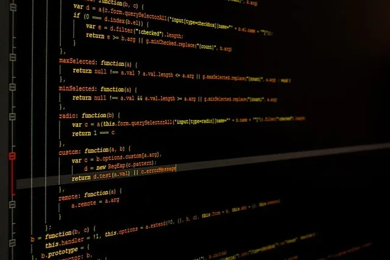
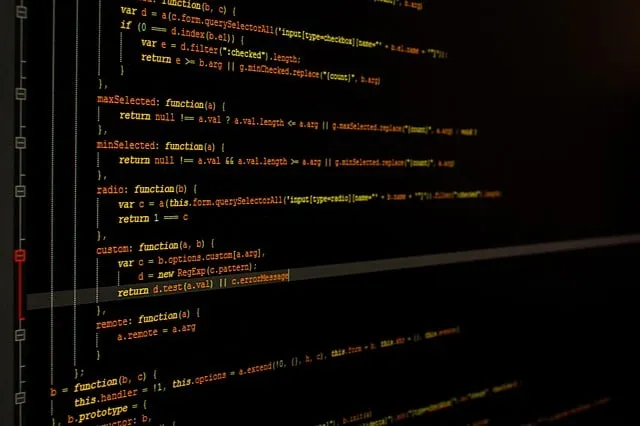

La carrera de Informática es una disciplina que abarca el estudio,diseño, desarrollo y
aplicación de sistemas computacionales y tecnología de la información. Es una de las áreas más
dinámicas y en constante evolución, ya que la tecnología avanza rápidamente y su impacto en la
sociedad crece día a día.
En esta carrera, los estudiantes adquieren conocimientos sobre programación, estructuras de datos,
algoritmos, bases de datos, redes de computadoras, ciberseguridad, inteligencia artificial y desarrollo
de software, entre otros temas. También se enfocan en la resolución de problemas mediante el uso de la
tecnología y aprenden a diseñar soluciones eficientes que optimicen procesos en diversas áreas como
negocios, salud, educación y entretenimiento.
Un profesional en Informática puede desempeñarse en múltiples sectores, como desarrollo de aplicaciones,
administración de sistemas informáticos, análisis de datos, seguridad informática o incluso la
investigación en nuevas tecnologías. Debido a la alta demanda de expertos en tecnología, la carrera
ofrece amplias oportunidades laborales y posibilidades de especialización en distintas ramas, como
ingeniería de software, ciencia de datos y computación en la nube.
En resumen , es una opción académica ideal para quienes disfrutan de la tecnología, la lógica y la
innovación, ya que permite no solo entender el funcionamiento de los sistemas informáticos, sino
también crear herramientas que impacten positivamente en la sociedad. ¿Te gustaría saber más sobre
alguna área específica de la Informática?
La carrera de Informática nos sirve para desarrollar habilidades y conocimientos
fundamentales en tecnología, lo que nos permite diseñar, optimizar y gestionar
sistemas computacionales en diversos ámbitos.
En un mundo cada vez más digitalizado, el papel de la informática es clave para la innovación y el crecimiento de la sociedad.
Al estudiar esta carrera, podemos contribuir en distintas áreas como el desarrollo de software,
la ciberseguridad, el análisis de datos, la inteligencia artificial y la computación en la nube.
Esto nos permite crear soluciones tecnológicas que mejoran la eficiencia en empresas, instituciones
gubernamentales, el ámbito educativo, la medicina y el entretenimiento, entre otros sectores.
Además, la informática nos brinda oportunidades laborales en un mercado altamente demandante y
en constante evolución, lo que abre puertas a empleos bien remunerados y permite la especialización
en áreas como ingeniería de software, ciencia de datos y administración de redes.
También nos da las
herramientas necesarias para emprender negocios propios en el campo de la tecnología y la innovación.
En resumen, la carrera de Informática es esencial para quienes desean impactar en el desarrollo
tecnológico, mejorar procesos y contribuir a la transformación digital en diversas industrias.
 

Los conocimientos de Informática pbeden aplicarse en una gran variedad de trabajos, ya que la tecnología es fundamental en casi todos los sectores. Aquí te menciono algunas áreas donde los profesionales en informática pueden desempeñarse: